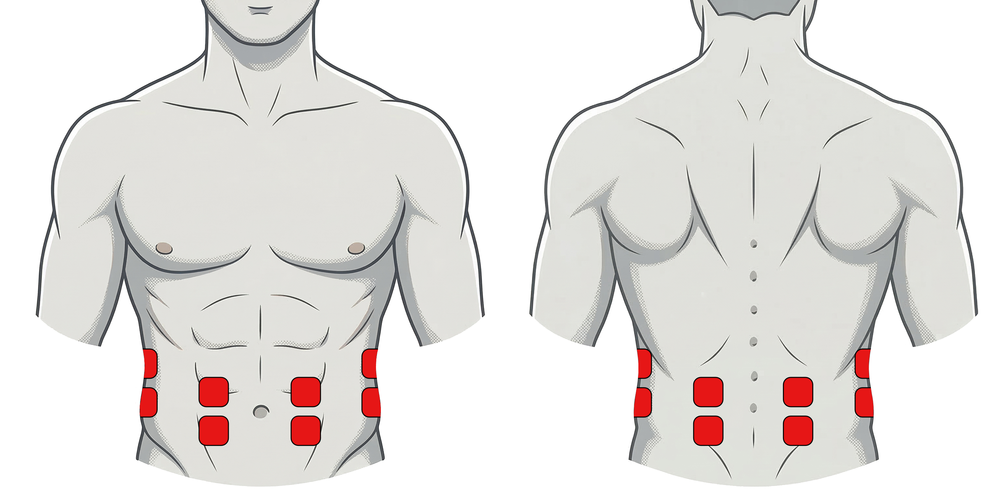

Im Rahmen meiner Masterarbeit untersuche ich, wie Menschen durch elektrotaktile Stimulation (EMS) vor räumlichen Gefahren gewarnt werden können, während sie konzentriert arbeiten. Dafür habe ich den "EMS-Radar"-Prototypen entwickelt und brauche nun deine Unterstützung!
Hauptaufgabe
Du schlüpfst in die Rolle eines Monteurs und baust ein Klemmbausteinset zusammen.
Experiment
Reagiere auf Warnsignale über Licht, Ton oder den EMS-Prototypen.
Dauer
Inklusive Einweisung und Kalibrierung ca. 90 Minuten.
Vorbereitung & Privatsphäre
Damit das System funktioniert, werden 12 Klebe-Elektroden im Bauch- und Rückenbereich angebracht.
- Selbstständiges Anbringen: Um deine Privatsphäre zu wahren, bringst du die Elektroden selbstständig an.
- Anleitung: Du erhältst eine bebilderte Platzierungsskizze und eine Einweisung.
- Unterstützung: Ich stehe jederzeit bereit, aber das Anbringen erfolgt durch dich selbst.
- Material: Du musst nichts mitbringen, alle Materialien (Elektroden etc.) werden zur Verfügung gestellt.

Tragekomfort & Sicherheit
- Gefühl: Die Stimulation fühlt sich wie ein Kribbeln oder eine Vibration an.
- Kalibrierung: Wir stellen die Intensität gemeinsam so ein, dass das EMS Feedback für dich deutlich spürbar, aber absolut angenehm ist.
- Volle Kontrolle: Du kannst das System jederzeit über einen Power-Button selbst ausschalten.
Voraussetzungen
Teilnahme möglich
- Mindestens 18 Jahre alt.
- Normales/korrigiertes Sehen & Hören.
Keine Teilnahme möglich
- Herzprobleme / Herzschrittmacher
- Epilepsie
- Schwangerschaft
- Implantierte medizinische Geräte
- Akute Hautläsionen im Bauch-/Rückenbereich
Du möchtest teilnehmen?
Mi, 18.03. – Sa, 21.03. am Campus Gummersbach, Raum 3.209
Jetzt Termin auswählenIch freue mich auf deine Teilnahme! 😊